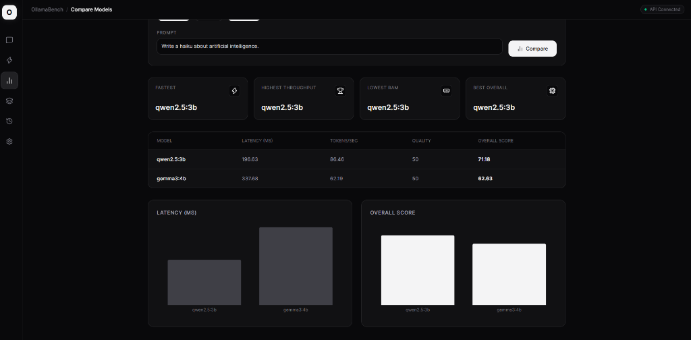
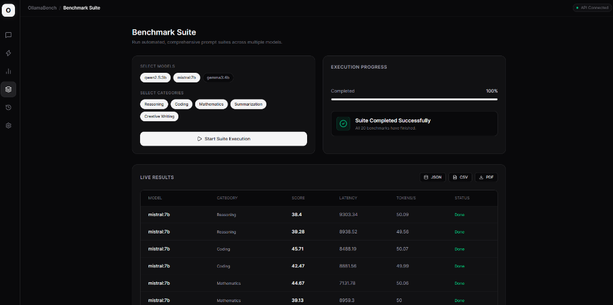
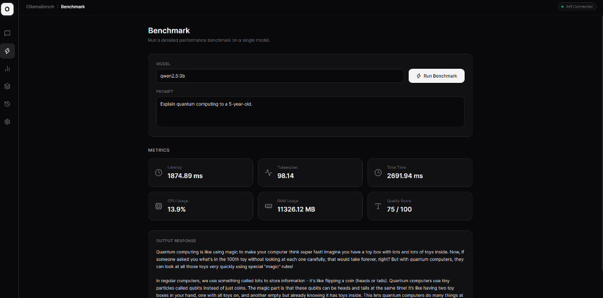

OllamaBench is a full-stack AI benchmarking platform designed to evaluate and compare locally deployed Large Language Models (LLMs) running through Ollama. It provides automated benchmarking, hardware-aware performance analysis, response quality evaluation, and interactive visualizations to help developers understand the trade-offs between model speed, resource usage, and output quality—all while running completely offline.
As local inference capabilities rapidly expand, engineers need reliable tools to evaluate models on specific hardware. OllamaBench addresses this by offering a comprehensive, offline benchmarking suite. It allows users to run standardized prompts across different local models (like Mistral, Gemma 3, and Qwen) and objectively measure latency, throughput (tokens/sec), CPU/RAM usage, and output quality.
OllamaBench relies on a clean, decoupled architecture ensuring the frontend stays highly responsive while the backend manages heavy inference and hardware profiling tasks.

Side-by-side analysis of latency, tokens/sec, and overall score across models.

Automated execution of multi-category prompts against selected models.

Granular hardware metrics, latency, and response quality scoring.
The engine executes prompts sequentially to avoid resource starvation. During inference, a background thread using psutil polls system resources to capture peak CPU and RAM footprints. Throughput is calculated strictly on generation tokens, excluding prompt processing time, to give an accurate representation of generation speed.
Challenges: Managing async state during long-running benchmark suites required careful handling of FastAPI background tasks and server-sent events (SSE) for real-time frontend updates.
Privacy & Cost: Because the system runs entirely offline via Ollama, it guarantees absolute data privacy. It also eliminates API costs, making it ideal for evaluating enterprise tasks where sensitive data cannot leave the local network.
Future iterations will focus on expanding the evaluation criteria. Planned features include integrating LLM-as-a-Judge capabilities (using a larger model to score smaller models' outputs) for higher accuracy qualitative evaluation, adding GPU VRAM profiling via NVML, and implementing a distributed benchmarking mode to test inference scaling across multiple local network nodes.